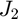

Astrodynamics Toolbox Documentation
Contents
Technical Documentation
See "Technical Documentation/Astrodynamics_A_Computational_Approach.pdf".
Opening this documentation using the MATLAB Command Window.
To open the home page (this page) of the toolbox documentation in MATLAB, type
doc_AT
in the Command Window. To open the documentation of a specific function with name function_name from the Command Window, type
doc_AT function_name
To open the PDF file with the technical documentation (Astrodynamics_A_Computational_Approach.pdf) from the Command Window, type
doc_AT tech
Installation
The overall toolbox directory contains the following:
- docs → Contains the HTML documentation needed by GitHub to deploy the online version of the toolbox documentation.
- examples → Contains examples for using various functions of the ODE solver toolbox, as well as examples for some more elementary concepts discussed in the technical documentation.
- INSTALL → Contains the toolbox installer (ODE Solver Toolbox.mltbx).
- licenses → Contains the software licenses.
- README.md → Markdown documentation for GitHub repository.
- Technical Documentation → Contains the technical documentation (Fixed_Step_ODE_Solvers.pdf).
- toolbox → Contains all the functions specific to this toolbox.
- toolbox/doc → Contains a copy of all the files and functions needed to open both the toolbox documentation and the technical documentation directly from the MATLAB command window using the doc_OST function.
- toolbox/lib → External libraries/functions required by this toolbox.
To install as a toolbox, simply open "ODE Solver Toolbox.mltbx" in the "INSTALL" folder. MATLAB will automatically perform the installation and add all the functions included in the toolbox to the MATLAB search path.
Absolute Orbit State Representations
- aer2enu ENU position and velocity from range, azimuth, elevation, and their rates.
- ecef2eci ECI position and velocity from ECEF position and velocity.
- ecef2enu ENU position and velocity from ECEF position and velocity.
- ecef2enu_matrix Rotation matrix from Earth-centered Earth-fixed (ECEF) frame to East, North, Up (ENU) frame.
- ecef2geod Geodetic coordinates from ECEF position.
- eci2ecef ECEF position and velocity from ECI position and velocity.
- eci2pqw_matrix Rotation matrix from Earth-centered inertial (ECI) frame to perifocal (PQW) frame.
- eci2rtn_matrix Rotation matrix from Earth-centered inertial (ECI) frame to Hill/orbital (RTN) frame.
- enu2aer Range, azimuth, elevation, and their rates from ENU position and velocity.
- enu2ecef ECEF position and velocity from ENU position and velocity.
- enu2ecef_matrix Rotation matrix from East, North, Up (ENU) frame to Earth-centered Earth-fixed (ECEF) frame.
- geod2ecef ECEF position from geodetic coordinates.
- h_approx Approximate geodetic altitude from ECEF position.
- oe2eci ECI position and velocity from Keplerian orbital elements.
- r2ad Geocentric right ascension and declination from ECI position.
- pqw2eci_matrix Rotation matrix from perifocal (PQW) frame to Earth-centered inertial (ECI) frame.
- pqw2rtn_matrix Rotation matrix from perifocal (PQW) frame to Hill/orbital (RTN) frame.
- rtn2eci_matrix Rotation matrix from Hill/orbital (RTN) frame to Earth-centered inertial (ECI) frame.
- rtn2pqw_matrix Rotation matrix from Hill/orbital (RTN) frame to perifocal (PQW) frame.
Relative Orbit State Representations
- eci2rtn Deputy relative state in chief's RTN frame from absolute ECI states of chief and deputy.
Earth Orientation
- ecef2eci_matrix_approx Rotation matrix from Earth-centered Earth-fixed (ECEF) frame to Earth-centered inertial (ECI) frame (approximate).
- eci2ecef_matrix_approx Rotation matrix from Earth-centered inertial (ECI) frame to Earth-centered Earth-fixed (ECEF) frame (approximate).
- eop_iau06 Earth orientation parameters (IAU2006/2000, CIO based).
- era_iau06 Earth rotation angle (ERA) (IAU2006/2000, CIO based).
- fund_arg_iau06 Fundamental arguments of nutation theory (IAU2006/2000, CIO based).
- gmst_iau06 Greenwich mean sidereal time (GMST) (IAU2006/2000, CIO based).
- gmst_linear Greenwich mean sidereal time (GMST) (linear model for GMST).
- gmst_vallado Greenwich mean sidereal time (GMST) (from "Fundamentals of Astrodynamics and Applications" by Vallado).
- iau06 Rotation matrices and Earth angular velocity from the IAU2006/2000 CIO based theory.
- load_eop Loads data storing Earth orientation parameters (IAU2006/2000, CIO based).
- load_XYs_iau06 Loads data needed for calculating the X, Y, and s terms for the precession-nutation matrix (IAU2006/2000, CIO based).
- Q_iau06 Precession-nutation matrix (IAU2006/2000, CIO based).
- R_iau06 Sidereal-rotation matrix (IAU2006/2000, CIO based).
- w_earth_approx Angular velocity of the Earth resolved in the ECI frame (approximate).
- w_earth_iau06 Angular velocity of the Earth resolved in the GCRF (IAU2006/2000, CIO based).
- W_iau06 Polar-motion matrix (IAU2006/2000, CIO based).
Environment Models
- eclipse Determines if a satellite is in eclipse (cylindrical shadow model).
- exponential Exponential model for atmospheric mass density.
- harris_priester Modified Harris-Priester model for atmospheric mass density.
- jacchia_bowman_2008 Jacchia-Bowman 2008 atmospheric model.
- jacchia_roberts Jacchia-Roberts atmospheric model.
- load_nrlm_data Loads data for NRLMSISE-00 atmospheric model.
- load_sw Loads space weather data.
- moon_position Moon position resolved in the ECI frame.
- nrlmsise00_matlab NRLMSISE-00 atmospheric model using the MATLAB Aerospace Toolbox's atmosnrlmsise00 function.
- nrlmsise00 NRLMSISE-00 atmospheric model.
- obliquity Obliquity of the ecliptic.
- space_weather Space weather data for the Jacchia-Roberts and NRLMSISE-00 atmospheric models.
- sun_position Sun position resolved in the ECI frame.
- t2ap Planetary amplitude from current time.
- t2Kp Planetary index from current time.
Force Models
- drag Perturbing acceleration due to atmospheric drag resolved in the ECI frame.
- gravity Gravitational acceleration.
- gravity_coeffs Un-normalized gravitational coefficients.
- J2_ecef Perturbing gravitational acceleration due to  resolved in the ECEF frame.
- J2_rtn Perturbing gravitational acceleration due to resolved in the RTN frame.
- legendre_recursion Recursive evaluation of coefficients related to the Legendre polynomials required for evaluating the gravitational acceleration.
- load_GGM05S Loads GGM05S gravity model data.
- relativity Perturbing acceleration due to relativistic effects.
- srp Perturbing acceleration due to solar radiation pressure.
- third_body Perturbing acceleration due to third-body gravity.
- two_body Two-body/Keplerian gravitational acceleration.
GNSS
Keplerian Orbits
- a2n Mean motion from semi-major axis.
- a2T Orbital period from semi-major axis.
- E2M Mean anomaly from eccentric anomaly.
- E2nu True anomaly from eccentric anomaly.
- M2E Eccentric anomaly from mean anomaly.
- M2nu True anomaly from mean anomaly.
- M2tof Time of flight between two mean anomalies.
- n2a Semi-major axis from mean motion.
- n2T Orbital period from mean motion.
- nu2E Eccentric anomaly from true anomaly.
- nu2M Mean anomaly from true anomaly.
- T2a Semi-major axis from orbital period.
- T2n Mean motion from orbital period.
- tof2M Mean anomaly from time of flight.
Kinematics
- cross_matrix Skew-symmetric matrix representing a cross product.
- rv2w Frame angular velocity from position and velocity.
Linearization
- dadX_drag Partial derivatives of drag acceleration with respect to position and inertial velocity, resolved in the ECI frame.
- dadX_gravity Partial derivatives of gravitational acceleration with respect to position and inertial velocity, resolved in the ECI frame.
- dadX_srp Partial derivatives of solar radiation pressure acceleration with respect to position and inertial velocity.
- dadX_third_body Partial derivatives of third-body gravitational acceleration with respect to position and inertial velocity.
- dadX_two_body Partial derivatives of two-body/Keplerian gravitational acceleration with respect to position and inertial velocity.
Rotations
- rot1 Rotation matrix for a passive rotation about the 1st axis.
- rot2 Rotation matrix for a passive rotation about the 2nd axis.
- rot3 Rotation matrix for a passive rotation about the 3rd axis.
- rot313 Rotation matrix for the 3-1-3 Euler rotation sequence.
- rot321 Rotation matrix for the 3-2-1 Euler rotation sequence.
Time Scales
Unit Conversions
- arcsec2deg Arcseconds to degrees.
- arcsec2rad Arcseconds to radians.
- deg2arcsec Degrees to arcseconds.
- deg2rad Degrees to radians.
- cal2doy Day of year from Gregorian (calendar) date.
- cal2mjd Modified Julian date from Gregorian (calendar) date.
- doy2cal Gregorian (calendar) date from year and day of year.
- f2hms Hours, minutes, and seconds from fraction of day.
- hms2f Fraction of day from hours, minutes, and seconds.
- jd2mjd Modified Julian date from Julian date.
- jd2t Julian centuries since J2000.0 from Julian date.
- mjd2cal Gregorian (calendar) date from modified Julian date.
- mjd2f Fraction of day from modified Julian date.
- mjd2jd Julian date from modified Julian date.
- mjd2t Julian centuries since J2000.0 from modified Julian date.
- rad2arcsec Radians to arcseconds.
- rad2deg Radians to degrees.